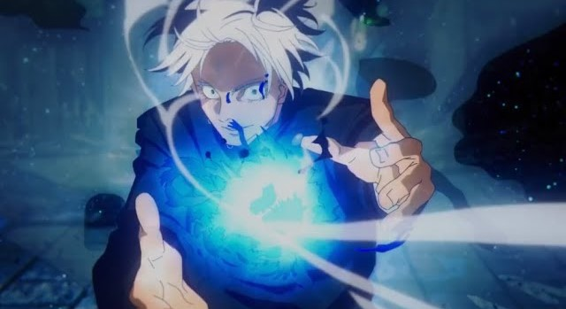
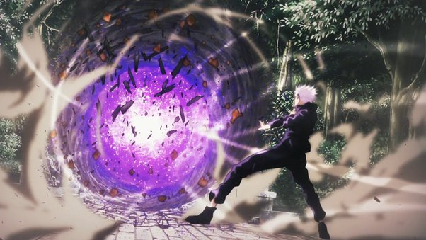

Techniques
Limitless
The limitless technique is a very powerful technique unique to the gojo clan. It can be used in a variety of ways. The technique manipulates the space around a focal point.
Red

Red is accomplished by forcing the space out around a certain point. almost like a blast from a bomb. Causing big destruction.
Blue
Blue is the opposite of red, sucking in all the space around a central point. Basically a miniature black hole.
Purple
Purple is the combination of red and blue. Best way to describe it is basically a giant ball of absolute destruction. Gojo's most lethal attack.